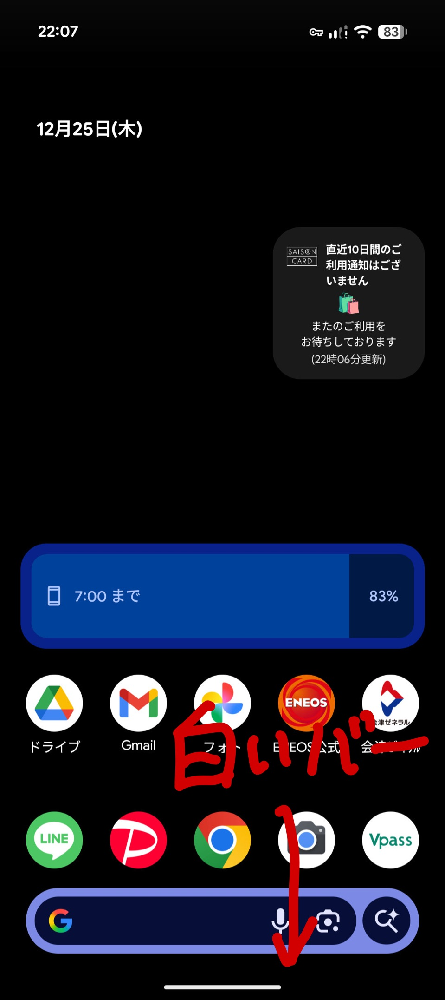
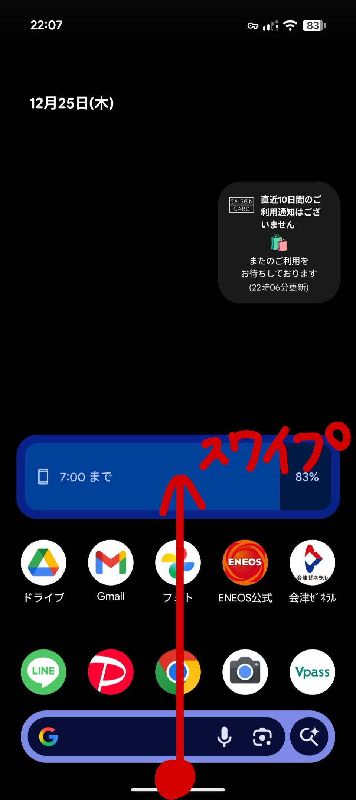
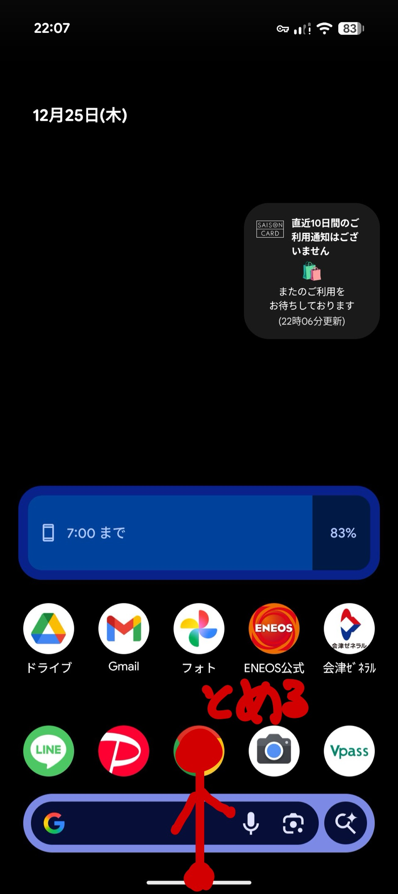
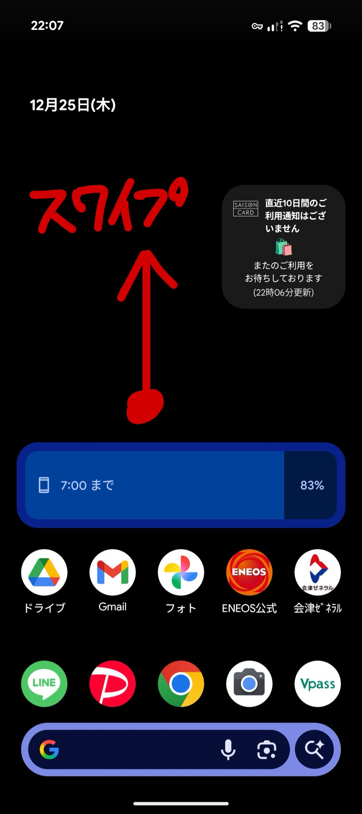

ホーム画面とは
ホーム画面は、アプリのアイコンが並んでいる画面です。スマホを使うときの基本の画面で、ここからいろいろなアプリを開くことができます。
白いバーの役割
画面の一番下に白い横長のバーがあります。この白いバーを使って、いろいろな操作ができます。

ホーム画面に戻る方法
他のアプリを使っているときに、ホーム画面に戻るには：
- 画面の一番下にある白いバーを、下から上にサッとスワイプします。
- すぐにホーム画面に戻ります。

最近使ったアプリを表示する
さっきまで使っていたアプリに戻りたいとき：
- 画面の一番下にある白いバーを、下から上にスワイプして、途中で指を止めます。
- 最近使ったアプリの一覧が表示されます。
- 左右にスワイプすると、他の最近使ったアプリも見れます。

すべてのアプリ一覧を表示する
スマホに入っているすべてのアプリを見るには：
- ホーム画面で、画面の中央から上にスワイプします。
- すべてのアプリがあいうえお順に並んで表示されます。
- 上下にスクロールすると、たくさんのアプリを見ることができます。

💡 ポイント： 白いバーを使うことで、ホーム画面に戻ったり、最近使ったアプリを見たりすることができます。最初は少し難しいかもしれませんが、何度か練習すればすぐに慣れます。